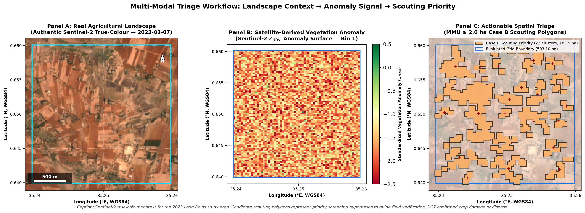
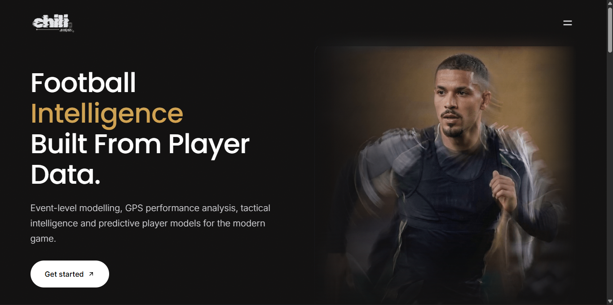
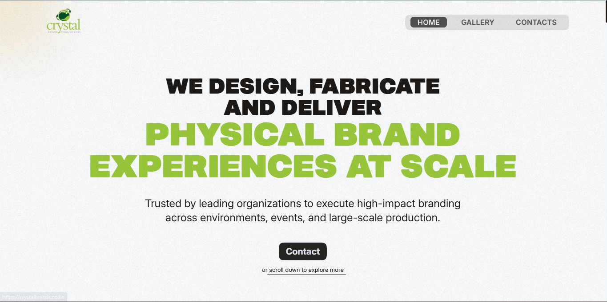

I build practical data and digital systems — from automated data pipelines and analytical models to geospatial intelligence, machine learning and production web applications[cite: 7]. My work spans agriculture, football, operations and quantitative modelling, with a focus on turning messy data into something people can actually use[cite: 7].
An end-to-end agricultural early-warning and anomaly screening system[cite: 5, 7]. Ingests optical satellite imagery, precipitation, and soil moisture across 15 × 14-day analysis bins using sensor-native resolution handling[cite: 1, 5]. Employs deterministic screening logic that outputs vector field boundaries for scouting teams without introducing spatial interpolation artifacts[cite: 1, 7].

A source-grounded farm management and decision-support system built around real operational records[cite: 1, 5]. Reconciles livestock herd movements, lactation yields, crop cycles, and resources into relational schemas while explicitly preserving missing or unknown source data rather than inventing values[cite: 1, 5].
An independent football intelligence platform covering player performance across African and European football, combining automated data acquisition, statistical analysis, player benchmarking and technical reporting[cite: 1, 7].

A quantitative modelling system engineered for international tournament outcome forecasting and market intelligence. Integrates hierarchical Bayesian Poisson models via MCMC, tree ensembles, Monte Carlo tournament simulations, and de-vigging with Kelly-based risk sizing.
Production commercial website built for a Kenyan branding, advertising and events company[cite: 1, 7]. Focused on commercial service positioning, responsive digital architecture, and structured business enquiry flows[cite: 1, 4].

End-to-end football object-detection workflow using match footage, dataset preparation, training, evaluation and inference on players, referees, and the ball[cite: 1, 6].
Applied statistical modelling investigating attacking sequences across 38 matches. Evaluated relationships between assist profiles, expected goals (xG), and final goal outcomes using mixed-effects regression.
Self-supervised contrastive learning framework applied across 3,000+ pavement images to learn structural representation embeddings, benchmarked via linear evaluation and t-SNE clustering[cite: 1, 6].
Automated collection pipeline navigating dynamic postings[cite: 1, 5]. Implements rate limiting, user-agent handling, HTML normalization, entity extraction, and automated skill taxonomy tagging into structured CSV exports[cite: 1].
Statistical evaluation of forward finishing performance, shot distribution metrics, and goal expectancy profiles using generalized linear and multinomial models across multi-season league datasets.
Convolutional neural network pipeline classifying regional wildlife species from camera-trap data[cite: 1, 7]. Covers image preprocessing, regularization, confusion matrix evaluation, and overfitting analysis[cite: 1, 7].
Python · SQL · R[cite: 4, 7]
Pandas · NumPy · scikit-learn · PyTorch · TensorFlow/Keras[cite: 4, 7]
Data Engineering · ETL / Data Pipelines · Web Scraping · API Integration · Automation[cite: 4, 7]
Statistical Modelling · Machine Learning · Data Analysis · Data Visualisation[cite: 4, 7]
Computer Vision · NLP · Deep Learning · Feature Engineering · Model Evaluation[cite: 4, 7]
XGBoost · LightGBM · YOLOv8 · OpenCV · spaCy · Sentence-BERT[cite: 1, 4, 7]
Bayesian Modelling · Hierarchical Models · MCMC · Monte Carlo Simulation · Forecasting
GLMs · Mixed-Effects Models · Quantitative Modelling
Remote Sensing · GIS · Geospatial Analytics · Agricultural Data Science[cite: 4, 7]
Sentinel-2 · Landsat · CHIRPS · NASA SMAP · NDVI · NDMI[cite: 4, 7]
GeoPandas · Rasterio · xarray · Dask · STAC · QGIS[cite: 4, 7]
SQLAlchemy · SQLite · DuckDB · PySpark · Docker · Git · GitHub · Pytest[cite: 4, 7]
Streamlit · Plotly · Matplotlib · ggplot2 · Tableau · Power BI · Excel[cite: 4, 5, 7]
BeautifulSoup · Selenium · Playwright · Hugging Face[cite: 4, 7]
Football Analytics · Player Intelligence · Sports Modelling[cite: 1, 7]
Agricultural Intelligence · Remote Sensing · Conservation Analytics[cite: 1, 7]
Data Quality & Reconciliation · Schema Validation · Technical Documentation · Reproducible Workflows[cite: 4, 7]